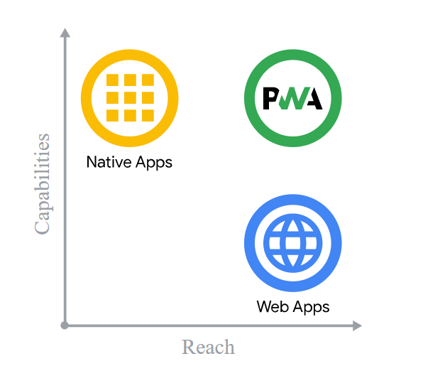
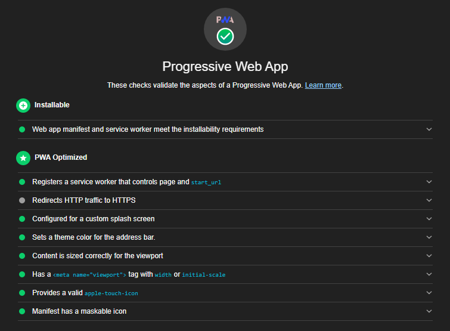
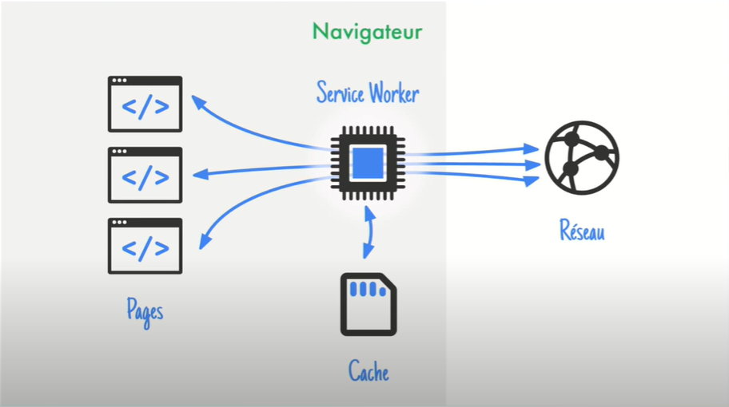

Qu'est-ce qu'une Progressive Web App ?

Une Progressive Web App n'est pas une technologie, c’est un terme marketing pour décrire un site web moderne qui a pris toutes les bonnes vitamines.
Un site web moderne qui commence sa vie dans un navigateur classique et qui finit sur l’écran d’accueil à peu près au même rang qu’une app native.
L'objectif est d'avoir les avantages d'une application native et l'accessibilité d'une application web.
Comme on peut le remarquer une application native à plus de capacité, tandis qu'une application web touche plus de monde.
Une Progressive Web App, permet d'avoir un peu des deux, et donc cela permet une meilleure expérience utilisateur.
Affin qu'un site ou une application web puisse être une PWA, il faut
qu’elle soit responsive, accessible hors connexion et installable sur le bureau ou l'écran d’accueil de l'appareil

Tout se base sur les Services Workers.
Il faut voir le service workers comme un proxy programmable qui est dans le navigateur et va intercepter les requêtes qu’il y à entre vos pages et votre serveur, et qui à son propre cache.

News
Pour optimiser ma veille technologique, je me suis fait une app avec Node.js (express, rss-parser). J'y ai mis différent flux rss qui m'interesse.
ATENTION ! il faut cependant trier les informations et faire attention a leur source (surtout les flux de Google alert)
Progressive Web Apps became popular when companies like Instagram and Spotify migrated to PWAs and reported benefits in user engagements. So now, what can a PWA do for the minor-sized B2B focused companies? Most businesses have touchpoints with clients, consumers, or service providers in their daily business. There might be a classical website or web portal to stay in touch. They may already think about transforming analog processes into automated ones, providing an Android or iOS app for customers or partners. But supplying and maintaining the website and apps for cross-platform simultaneously is a time-consuming and costly effort.
see more -> Dec 23, 2021ES modules have been a developer favorite for a while now. In addition to a number of other benefits, they offer the promise of a universal module format where shared code can be released once and run in browsers and in alternative runtimes like Node.js. While all modern browsers offer some ES module support, they don't all offer support everywhere that code can be run. Specifically, support for importing ES modules inside of a browser's service worker is just starting to become more widely available. This article details the current state of ES module support in service workers across common browsers, along with some gotchas to avoid, and best practices for shipping backwards-compatible service worker code.
see more -> May 13, 2021Rakuten 24 is an online store provided by Rakuten, one of the largest e-commerce companies in Japan. It provides a wide selection of everyday items including grocery, medicine, healthcare, kitchen utensils, and more. The team's main goal over the last year was to improve mobile customer retention and re-engagement. By making their web app installable, they saw a 450% jump in visitor retention rate as compared to the previous mobile web flow over a 1-month timeframe.
see more -> Nov 17, 2020